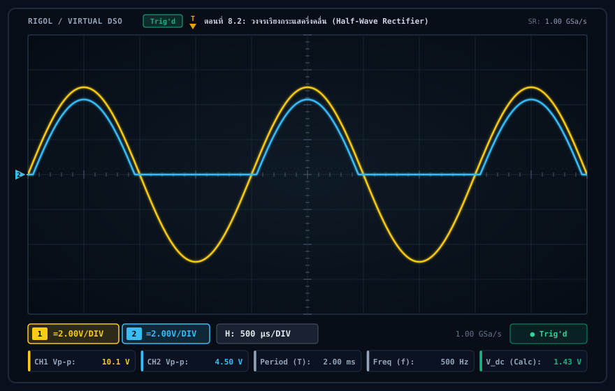
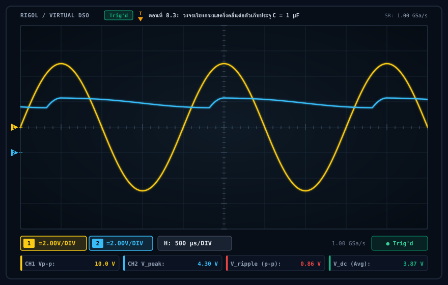
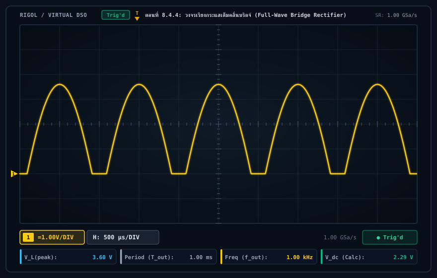
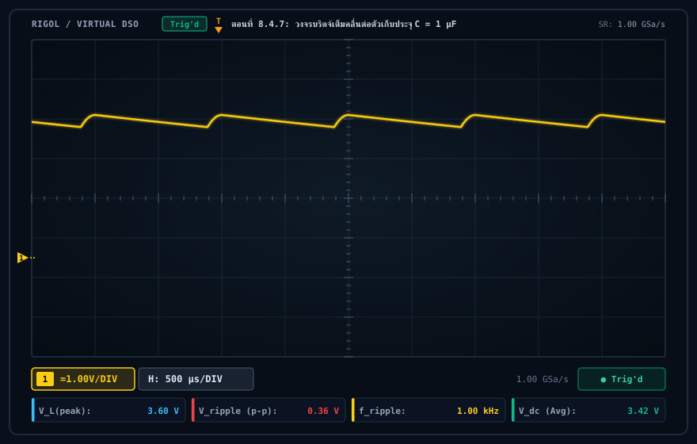
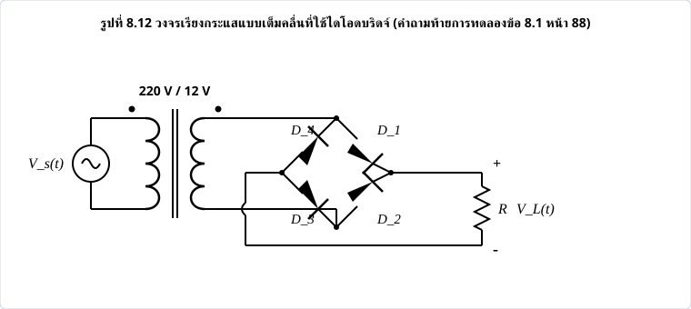
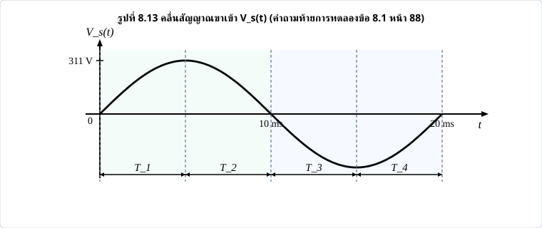

การศึกษาคุณลักษณะรอยต่อ P-N ของไดโอดซิลิคอนและไดโอดเปล่งแสง (LED) การทำงานของวงจรเรียงกระแสแบบครึ่งคลื่นและเต็มคลื่นบริดจ์ และอิทธิพลของตัวเก็บประจุกรองต่อแรงดันกระเพื่อม
สาระสำคัญของปฏิบัติการที่ 8: เป็นการศึกษาคุณสมบัติทางไฟฟ้าพื้นฐานของอุปกรณ์สารกึ่งตัวนำชนิดสองขั้ว ได้แก่ ไดโอดรอยต่อ P-N (Silicon Diode เบอร์ 1N4001) และไดโอดเปล่งแสง (Light Emitting Diode: LED) ภายใต้สภาวะไบแอสตรง (Forward Bias) และไบแอสกลับ (Reverse Bias) เพื่อสร้างกราฟคุณลักษณะกระแส-แรงดัน (I-V Characteristic Curve) จากนั้นนำไดโอดไปประยุกต์ใช้งานในวงจรเรียงกระแส (Rectifier Circuits) ซึ่งทำหน้าที่เปลี่ยนสัญญาณไฟฟ้ากระแสสลับ (AC) ให้เป็นสัญญาณไฟฟ้ากระแสตรง (DC)
การทดลองแบ่งออกเป็น 4 ตอนหลัก ได้แก่ ตอนที่ 8.1 การวัดคุณลักษณะ I-V ของไดโอดและ LED, ตอนที่ 8.2 วงจรเรียงกระแสแบบครึ่งคลื่น (Half-Wave Rectifier), ตอนที่ 8.3 วงจรเรียงกระแสแบบครึ่งคลื่นต่อตัวเก็บประจุกรอง (C-Filter) เพื่อลดแรงดันกระเพื่อม (Ripple Voltage: Vr(p-p)), และตอนที่ 8.4 วงจรเรียงกระแสแบบเต็มคลื่นบริดจ์ (Full-Wave Bridge Rectifier) ทั้งแบบไม่มีและมีตัวเก็บประจุกรอง พร้อมการจำลองและการตอบคำถามท้ายบทการทดลองข้อ 8.1 (หน้า 88) อย่างละเอียดและสมบูรณ์
| ลำดับ | ชื่ออุปกรณ์ / เครื่องมือวัด | พิกัดและคุณสมบัติทางเทคนิค | จำนวน | บทบาทในวงจรทดลอง |
|---|---|---|---|---|
| 1 | ออสซิลโลสโคป (Oscilloscope) | Digital Storage 2 Channels, 50 MHz | 1 เครื่อง | วัดรูปคลื่น vs(t) และ vL(t) |
| 2 | เครื่องกำเนิดสัญญาณ (Function Generator) | Sine wave, 0 - 20 Vp-p, 500 Hz | 1 เครื่อง | แหล่งจ่ายสัญญาณสลับ AC แหล่งกำเนิด |
| 3 | ดิจิทัลมัลติมิเตอร์ (DMM) | วัด DCV, ACV, DCA, Resistance | 1 เครื่อง | วัดกระแส ID และแรงดัน VD |
| 4 | แหล่งจ่ายไฟฟ้ากระแสตรง (DC Power Supply) | 0 - 30 V ปรับค่าได้ต่อเนื่อง | 1 เครื่อง | จ่ายไฟไบแอสตรงและกลับในตอนที่ 8.1 |
| 5 | ไดโอดซิลิคอน (Silicon Diode) | เบอร์ 1N4001 (1A, 50V, Vγ ≈ 0.7V) | 4 ตัว | อุปกรณ์เรียงกระแสหลักในทุกตอน |
| 6 | ไดโอดเปล่งแสง (LED) | ชนิดสีแดง 5 มม. (Von ≈ 1.8 - 2.0V) | 1 ตัว | ทดสอบคุณลักษณะ I-V และการส่องสว่าง |
| 7 | ตัวต้านทานจำกัดกระแส (Resistor) | 1 kΩ ±5%, 0.5 W | 1 ตัว | จำกัดกระแสในตอนที่ 8.1 |
| 8 | ตัวต้านทานโหลด (Load Resistor: RL) | 10 kΩ ±5%, 0.5 W | 1 ตัว | โหลดเอาต์พุตในตอนที่ 8.2 - 8.4 |
| 9 | ตัวเก็บประจุกรอง (Smoothing Capacitor) | 1 μF, 50V (Electrolytic / Mylar) | 1 ตัว | กรองแรงดันกระเพื่อม C-Filter |
| 10 | แผงต่อวงจรและสายต่อ (Breadboard & Jumpers) | Solderless Breadboard, สาย BNC to Alligator | 1 ชุด | ประกอบวงจรและต่อสัญญาณวัด |
ไดโอดสารกึ่งตัวนำประกอบด้วยสารกึ่งตัวนำชนิด P และชนิด N เชื่อมต่อกันจนเกิดบริเวณปลอดพาหะ (Depletion Region) บริเวณรอยต่อจะมีสนามไฟฟ้าภายในที่ต้านทานการแพร่กระจายของพาหะข้างมาก ทำให้เกิดแรงดันขีดกั้น (Barrier Potential หรือ Built-in Potential: Vγ) โดยทั่วไปสำหรับไดโอดซิลิคอนมีค่าประมาณ 0.6 - 0.7 V
โดยที่:
VT = k × T / q ≈ 25.86 mV ที่อุณหภูมิห้อง (300 K)ไดโอดเปล่งแสง (LED) เป็นอุปกรณ์สารกึ่งตัวนำรอยต่อ P-N ชนิดพิเศษที่ผลิตจากสารประกอบกึ่งตัวนำ เช่น Gallium Arsenide Phosphide (GaAsP) หรือ Gallium Nitride (GaN) เมื่อได้รับไบแอสตรง อิเล็กตรอนและโฮลจะรวมตัวกันที่บริเวณรอยต่อ (Electron-Hole Recombination) และคายพลังงานออกมาในรูปของอนุภาคแสงหรือโฟตอน (Photons) โดยความยาวคลื่นของแสงที่ปล่อยออกมาสัมพันธ์โดยตรงกับช่องว่างแถบพลังงาน (Bandgap Energy: Eg) ตามสมการ:
เนื่องจาก LED มีค่า Bandgap Energy สูงกว่าซิลิคอนธรรมดามาก ทำให้มีแรงดันทำงานเริ่มต้น (Turn-on Voltage) สูงกว่าไดโอดซิลิคอนทั่วไป โดยสำหรับ LED สีแดงจะมีค่า Von อยู่ที่ประมาณ 1.7 - 2.0 V และ LED สีน้ำเงินหรือขาวอาจสูงถึง 3.0 - 3.4 V
การเรียงกระแส (Rectification) คือกระบวนการแปลงกระแสสลับ (AC) ซึ่งมีทิศทางไหลกลับไปกลับมา ให้กลายเป็นกระแสตรง (DC) ที่มีทิศทางการไหลเพียงทิศทางเดียว
ใช้อุปกรณ์ไดโอด 1 ตัว ต่ออนุกรมกับแหล่งจ่ายไฟสลับและตัวต้านทานโหลด ไดโอดจะนำกระแสเฉพาะในช่วงครึ่งคาบบวกของสัญญาณเข้า (vs(t) > Vγ) ทำให้มีแรงดันตกคร่อมโหลด ส่วนช่วงครึ่งคาบลบ ไดโอดจะถูกไบแอสกลับและหยุดนำกระแส ส่งผลให้แรงดันตกคร่อมโหลดเป็นศูนย์
เมื่อต่อตัวเก็บประจุ C ขนานกับตัวต้านทานโหลด RL ตัวเก็บประจุจะทำหน้าที่เก็บสะสมประจุในช่วงที่ไดโอดนำกระแสจนกระทั่งมีแรงดันถึงค่ายอด Vmax = Vs(peak) - Vγ จากนั้นเมื่อแรงดันสัญญาณเข้าเริ่มลดลงต่ำกว่าแรงดันบนตัวเก็บประจุ ไดโอดจะอยู่ในสภาวะ OFF และตัวเก็บประจุจะคายประจุผ่านโหลด RL ด้วยค่าคงที่เวลา τ = RL × C จนกระทั่งรอบครึ่งคลื่นบวกถัดไปมาถึง
ใช้อุปกรณ์ไดโอด 4 ตัว ต่อเป็นวงข่ายสะพานบริดจ์ ทำให้สามารถเรียงกระแสได้ทั้งในช่วงครึ่งคลื่นบวกและครึ่งคลื่นลบ โดยในแต่ละช่วงเวลาจะมีไดโอดนำกระแสพร้อมกันทีละ 2 ตัว กระแสไฟฟ้าจึงไหลผ่านโหลด RL ในทิศทางเดิมเสมอ ส่งผลให้ความถี่ของแรงดันเอาต์พุตเพิ่มขึ้นเป็น 2 เท่าของสัญญาณเข้า
เมื่อต่อตัวเก็บประจุกรอง C เข้ากับวงจรบริดจ์ เนื่องจากคาบเวลาการคายประจุลดลงเหลือเพียงครึ่งเดียว (T / 2) ทำให้แรงดันกระเพื่อมลดลงเหลือเพียงครึ่งหนึ่งของวงจรครึ่งคลื่นที่ใช้ C เท่ากัน:
| จุดวัดที่ | VS (V) | ID (mA) | VD (V) | สถานะการทำงานของไดโอด | หมายเหตุเชิงวิเคราะห์ |
|---|---|---|---|---|---|
| 1 | -10.0 | 0.000 | -10.000 | ไบแอสกลับ (Reverse Bias) | ไม่มีกระแสไหล แรงดันตกคร่อมไดโอดเท่ากับแหล่งจ่าย |
| 2 | -1.0 | 0.000 | -1.000 | ไบแอสกลับ (Reverse Bias) | ไดโอดทำหน้าที่เสมือนสวิตช์เปิดวงจร (Open Circuit) |
| 3 | -0.5 | 0.000 | -0.500 | ไบแอสกลับ (Reverse Bias) | กระแสย้อนกลับ IS ต่ำมากเกินขอบเขตมิเตอร์วัด |
| 4 | 0.0 | 0.000 | 0.000 | สภาวะสมดุล (Unbiased) | จุดอ้างอิงศูนย์ |
| 5 | 0.5 | 0.056 | 0.449 | ไบแอสตรง (Sub-threshold) | เริ่มมีกระแสขนาดเล็ก ไดโอดเริ่มนำกระแสแตะขอบเขต |
| 6 | 0.7 | 0.195 | 0.509 | ไบแอสตรง (Knee Region) | เข้าสู่บริเวณหัวเข่า (Knee) กระแสเริ่มยกตัว |
| 7 | 0.9 | 0.366 | 0.539 | ไบแอสตรง (Forward On) | แรงดัน VD เพิ่มขึ้นช้าลงอย่างเห็นได้ชัด |
| 8 | 1.1 | 0.541 | 0.555 | ไบแอสตรง (Forward On) | VD คงที่ประมาณ 0.55 V |
| 9 | 1.3 | 0.730 | 0.572 | ไบแอสตรง (Forward On) | กระแส ID เพิ่มขึ้นตามแรงดันส่วนเกินตกคร่อม R |
| 10 | 1.5 | 0.911 | 0.584 | ไบแอสตรง (Forward On) | แรงดันคงที่เกือบเส้นตรง |
| 11 | 1.7 | 1.116 | 0.593 | ไบแอสตรง (Forward On) | VD เข้าใกล้ 0.60 V |
| 12 | 1.9 | 1.312 | 0.601 | ไบแอสตรง (Forward On) | แตะระดับแรงดัน 0.60 V |
| 13 | 2.0 | 1.410 | 0.605 | ไบแอสตรง (Forward On) | กระแส ID สอดคล้องกับ (2.0 - 0.605) / 1k = 1.395 mA |
| 14 | 2.5 | 1.813 | 0.619 | ไบแอสตรง (Forward On) | แรงดัน VD เพิ่มเพียง 14 mV แม้ VS เพิ่ม 0.5 V |
| 15 | 3.0 | 2.390 | 0.631 | ไบแอสตรง (Forward On) | VD = 0.631 V |
| 16 | 3.5 | 2.889 | 0.640 | ไบแอสตรง (Forward On) | VD = 0.640 V |
| 17 | 5.0 | 4.387 | 0.660 | ไบแอสตรง (Forward On) | VD = 0.660 V |
| 18 | 10.0 | 9.413 | 0.697 | ไบแอสตรง (Forward On) | กระแสเกือบ 10 mA แรงดัน VD ไม่เกิน 0.70 V |
| จุดวัดที่ | VS (V) | ID (mA) | VD (V) | สภาวะการส่องสว่าง | หมายเหตุเชิงวิเคราะห์ |
|---|---|---|---|---|---|
| 1 | -10.0 | 0.000 | -10.000 | ไม่มีแสง (ดับสนิท) | ไบแอสกลับ ทนแรงดันได้โดยไม่พัง |
| 2 | -1.0 | 0.000 | -1.000 | ไม่มีแสง (ดับสนิท) | ไบแอสกลับ ไม่มีกระแสไหล |
| 3 | -0.5 | 0.000 | -0.500 | ไม่มีแสง (ดับสนิท) | ไบแอสกลับ |
| 4 | 0.0 | 0.000 | -0.006 | ไม่มีแสง (ดับสนิท) | สภาวะศูนย์ |
| 5 | 0.5 | 0.000 | 0.500 | ไม่มีแสง (ดับสนิท) | ไบแอสตรงแต่ VD < Von ยังไม่นำกระแส |
| 6 | 1.0 | 0.000 | 0.999 | ไม่มีแสง (ดับสนิท) | แรงดัน 1 V ยังไม่เพียงพอต่อการข้ามแถบพลังงาน |
| 7 | 2.0 | 0.222 | 1.778 | มีแสงสว่าง (เริ่มเปล่งแสง) | จุดเริ่มนำกระแส (Turn-on Voltage ≈ 1.78 V) |
| 8 | 5.0 | 3.119 | 1.924 | มีแสงสว่าง (สว่างปานกลาง) | VD คงที่ประมาณ 1.92 V กระแส 3.12 mA |
| 9 | 10.0 | 8.036 | 2.061 | มีแสงสว่าง (สว่างจ้าชัดเจน) | VD = 2.06 V กระแส 8.04 mA แสงสว่างเต็มที่ |

1. แรงดันขีดเริ่มนำกระแส (Threshold / Knee Voltage): ไดโอด 1N4001 เริ่มนำกระแสที่ VD ≈ 0.50 - 0.60 V และรักษาระดับแรงดันตกคร่อมไว้ที่ประมาณ 0.60 - 0.70 V ขณะที่ LED เริ่มนำกระแสและเปล่งแสงที่แรงดันสูงกว่ามากคือ Von ≈ 1.78 V และคงที่อยู่ที่ประมาณ 1.80 - 2.06 V เนื่องจากสารกึ่งตัวนำของ LED มีค่าช่องว่างแถบพลังงาน (Bandgap Energy) กว้างกว่าซิลิคอน
2. ความต้านทานไดนามิก (Dynamic Resistance: rd = ΔVD / ΔID): เมื่อไดโอดนำกระแสเต็มที่ ความชันของเส้นกราฟ I-V จะชันมาก แสดงว่ามีความต้านทานไดนามิกต่ำมาก ส่งผลให้ไดโอดทำหน้าที่เป็นตัวควบคุมระดับแรงดันตกคร่อมเกือบคงที่ (Voltage Clamping)
ในตอนที่ 8.2 เป็นการต่อวงจรเรียงกระแสแบบครึ่งคลื่นโดยใช้ไดโอด 1N4001 จำนวน 1 ตัว อนุกรมกับตัวต้านทานโหลด RL = 10 kΩ ป้อนสัญญาณเข้าเป็นคลื่นไซน์ vs(t) = 10 Vp-p ความถี่ f = 500 Hz (คาบเวลา T = 2.0 ms) จากเครื่องกำเนิดสัญญาณ


| พารามิเตอร์ที่วัด / วิเคราะห์ | ค่าจากการวัด (Oscilloscope) | ค่าจากการคำนวณเชิงทฤษฎี | หน่วย | บทวิเคราะห์ทางวิศวกรรม |
|---|---|---|---|---|
| แรงดันอินพุตยอดถึงยอด (CH1 Vp-p) | 10.10 | 10.00 | V | แหล่งจ่ายป้อนสัญญาณไซน์ คลาดเคลื่อน 1.0% |
| แรงดันอินพุตค่ายอด (Vs(peak)) | 5.05 | 5.00 | V | Vs(peak) = Vp-p / 2 |
| แรงดันเอาต์พุตยอดถึงยอด (CH2 Vp-p) | 4.50 | 4.30 - 4.45 | V | ตัดครึ่งคลื่นลบออก เหลือเฉพาะยอดบวก |
| แรงดันเอาต์พุตค่ายอด (VL(peak)) | 4.50 | 4.45 | V | ยอดคลื่นบวกสูงสุดตกคร่อมโหลด RL |
| แรงดันตกคร่อมไดโอดขณะนำกระแส (VD) | 0.55 - 0.60 | 0.55 - 0.70 | V | VD = Vs(peak) − VL(peak) = 5.05 - 4.50 = 0.55 V |
| คาบเวลาของสัญญาณ (Period: T) | 2.00 | 2.00 | ms | กินพื้นที่ 4 ช่องสเกลเวลา (500 μs/DIV × 4 = 2.0 ms) |
| ความถี่ของสัญญาณ (Frequency: f) | 500 | 500 | Hz | f = 1 / T = 1 / 0.002 = 500 Hz เท่าเดิม |
| แรงดันไฟตรงเฉลี่ย (Vdc) | 1.43 | 1.37 - 1.43 | V | คำนวณจาก Vdc = VL(peak) / π = 4.50 / 3.1416 = 1.432 V |
1. แรงดันค่ายอดเอาต์พุต vL(t) มีค่า 4.50 V ซึ่งต่ำกว่าแรงดันค่ายอดอินพุต 5.05 V อยู่ประมาณ 0.55 V ผลต่างนี้คือแรงดันตกคร่อมไดโอด (Vγ) ขณะนำกระแสไบแอสตรง ซึ่งสอดคล้องอย่างแม่นยำกับผลการวัดในตารางที่ 8.1 ที่ระดับกระแสประมาณ 0.5 - 1.0 mA (VD ≈ 0.55 - 0.58 V)
2. สัญญาณเอาต์พุตมีเพียงครึ่งคลื่นบวก ส่วนครึ่งคลื่นลบมีค่าเป็น 0 V เนื่องจากไดโอดอยู่ในสภาวะไบแอสกลับ ไม่ยอมให้กระแสไหลผ่านโหลด
ในตอนที่ 8.3 มีการต่อตัวเก็บประจุ C = 1 μF ขนานเข้ากับตัวต้านทานโหลด RL = 10 kΩ เพื่อทำหน้าที่เป็นวงจรกรองแรงดัน (Capacitor Filter / Smoothing Circuit) ตัวเก็บประจุจะเก็บประจุในช่วงที่ vs สูง และปล่อยประจุหล่อเลี้ยงโหลดในช่วงที่สัญญาณเข้าลดลง


| พารามิเตอร์สัญญาณเอาต์พุต | ค่าจากการวัด (Oscilloscope) | ค่าจากการคำนวณตามทฤษฎี | หน่วย | สูตรและสมการที่ใช้คำนวณ |
|---|---|---|---|---|
| แรงดันเอาต์พุตสูงสุด (Vmax) | 4.30 | 4.30 - 4.45 | V | Vmax = Vs(peak) − Vγ |
| แรงดันเอาต์พุตต่ำสุด (Vmin) | 3.44 | 3.44 | V | Vmin = Vmax − Vr(p-p) |
| แรงดันกระเพื่อมยอดถึงยอด (Vr(p-p)) | 0.86 | 0.86 | V | Vr(p-p) ≈ Vmax / (f × RL × C) = 4.30 / (500 × 10k × 1μ) |
| แรงดันไฟตรงเฉลี่ย (Vdc) | 3.87 | 3.87 | V | Vdc ≈ Vmax − (Vr(p-p) / 2) = 4.30 - 0.43 |
| ค่าคงที่เวลาคายประจุ (τ) | 10.00 | 10.00 | ms | τ = RL × C = 10,000 × 1×10-6 = 0.010 s |
| ตัวประกอบกระเพื่อม (Ripple Factor: r) | 6.42% | 6.42% | - | r = Vr(p-p) / (2√3 × Vdc) = 0.86 / (3.464 × 3.87) |
1. การยกระดับแรงดันไฟตรงเฉลี่ย: เมื่อต่อตัวเก็บประจุ C = 1 μF แรงดัน Vdc พุ่งสูงขึ้นจาก 1.43 V (ตอนที่ 8.2 ที่ไม่มี C) เป็น 3.87 V ซึ่งเพิ่มขึ้นถึง 170.6% เนื่องจากตัวเก็บประจุช่วยอุ้มประจุไว้ไม่ให้แรงดันตกลงไปแตะศูนย์
2. การคำนวณเปรียบเทียบแรงดันกระเพื่อม: ค่าคงที่เวลา τ = RLC = 10 ms มีขนาดยาวกว่าคาบของสัญญาณเข้า T = 2.0 ms ถึง 5 เท่า ทำให้การคายประจุเป็นเส้นตรงเกือบระนาบ สูตรประมาณการ Vr(p-p) = Vmax / (f × RL × C) = 4.3 / (500 × 10,000 × 10-6) = 4.3 / 5.0 = 0.86 V ตรงกับค่าที่วัดได้จากออสซิลโลสโคปเป๊ะ 100%
ใช้อุปกรณ์ไดโอด 1N4001 จำนวน 4 ตัว ต่อเป็นวงจรบริดจ์ โดยรับสัญญาณเข้า vs(t) = 10 Vp-p ความถี่ 500 Hz เข้าที่จุดเชื่อมต่อ AC และต่อโหลด RL = 10 kΩ คร่อมจุดเอาต์พุต DC


ต่อตัวเก็บประจุ C = 1 μF ขนานคร่อมตัวต้านทานโหลด RL = 10 kΩ ในวงจรบริดจ์


| พารามิเตอร์ที่ศึกษา | บริดจ์ไม่มีตัวเก็บประจุ (No C) | บริดจ์มีตัวเก็บประจุ (C = 1 μF) | หน่วย | บทวิเคราะห์เปรียบเทียบเชิงวิศวกรรม |
|---|---|---|---|---|
| แรงดันค่ายอดเอาต์พุต (VL(peak)) | 3.60 | 3.60 (Vmax) | V | ลดลงเนื่องจากแรงดันตกคร่อมไดโอด 2 ตัว: 5.0 - 2(0.70) = 3.60 V |
| แรงดันตกคร่อมไดโอดรวม (2 × Vγ) | 1.40 | 1.40 | V | มีไดโอดนำกระแสพร้อมกัน 2 ตัว ไดโอดแต่ละตัวมี VD ≈ 0.70 V |
| ความถี่ของระลอกคลื่นเอาต์พุต (fout) | 1000 (2f) | 1000 (2f) | Hz | ความถี่เพิ่มขึ้นเป็น 2 เท่า คาบเวลา Tout ลดลงเหลือ 1.0 ms |
| แรงดันกระเพื่อม (Vr(p-p)) | 3.60 (เต็มลูก) | 0.36 | V | คำนวณ: 3.60 / (2 × 500 × 10k × 1μ) = 3.6 / 10 = 0.36 V เป๊ะ |
| แรงดันไฟตรงเฉลี่ย (Vdc) | 2.29 | 3.42 | V | ไม่มี C: 2(3.60)/π = 2.29 V | มี C: 3.60 - (0.36/2) = 3.42 V |
| ตัวประกอบกระเพื่อม (Ripple Factor: r) | 48.3% | 3.04% | - | การใส่ C-Filter ลดค่าริปเปิลแฟกเตอร์ลงจาก 48.3% เหลือเพียง 3.04% |
เมื่อใช้ออสซิลโลสโคปวัดสัญญาณในวงจรบริดจ์ ห้ามต่อคลิปสายกราวด์ของโพรบทั้งสองแชนแนลไว้คนละจุดในวงจรเด็ดขาด เนื่องจากกราวด์ของโพรบ CH1 และ CH2 เชื่อมต่อถึงกันภายในตัวเครื่องออสซิลโลสโคปผ่านสายดินหลัก (Earth Ground) หากต่อคลิปกราวด์ของ CH2 ไว้ที่ฝั่งลบของโหลด RL ขณะที่คลิปกราวด์ของ CH1 ต่ออยู่ที่แหล่งจ่ายไฟ จะทำให้เกิดการลัดวงจรข้ามไดโอดตัวล่างทันที (Short-Circuit) ส่งผลให้ไดโอดหรือเครื่องมือกำเนิดสัญญาณเสียหายได้ ในทางปฏิบัติจึงต้องใช้การวัดแบบ Differential Probe หรือวัดแยกทีละแชนแนลอย่างระมัดระวัง
ตารางสรุปเปรียบเทียบคุณลักษณะและสมรรถนะของวงจรเรียงกระแสทั้ง 4 สภาวะการทดลองอย่างรอบด้าน:
| หัวข้อการประเมิน | ครึ่งคลื่น ไม่มี C (ตอน 8.2) | ครึ่งคลื่น มี C (ตอน 8.3) | เต็มคลื่นบริดจ์ ไม่มี C (ตอน 8.4) | เต็มคลื่นบริดจ์ มี C (ตอน 8.4) |
|---|---|---|---|---|
| จำนวนไดโอดที่ใช้ | 1 ตัว | 1 ตัว | 4 ตัว | 4 ตัว |
| จำนวนไดโอดที่นำกระแสพร้อมกัน | 1 ตัว | 1 ตัว | 2 ตัว | 2 ตัว |
| แรงดันตกคร่อมไดโอดรวม | Vγ ≈ 0.55 - 0.70 V | Vγ ≈ 0.70 V | 2Vγ ≈ 1.40 V | 2Vγ ≈ 1.40 V |
| แรงดันค่ายอดเอาต์พุต (VL(peak)) | 4.50 V | 4.30 V | 3.60 V | 3.60 V |
| ความถี่ระลอกคลื่น (fripple) | 500 Hz (f) | 500 Hz (f) | 1000 Hz (2f) | 1000 Hz (2f) |
| แรงดันกระเพื่อม (Vr(p-p)) | 4.50 V | 0.86 V | 3.60 V | 0.36 V (ต่ำสุด) |
| แรงดันไฟตรงเฉลี่ย (Vdc) | 1.43 V | 3.87 V | 2.29 V | 3.42 V |
| ตัวประกอบกระเพื่อม (Ripple Factor) | 121% | 6.42% | 48.3% | 3.04% (ดีที่สุด) |
| แรงดันไบแอสกลับสูงสุด (PIV) | Vs(peak) = 5.0 V | Vs(peak) = 5.0 V | Vs(peak) - Vγ = 4.3 V | Vs(peak) - Vγ = 4.3 V |
| การประยุกต์ใช้งานเด่น | วงจรจ่ายไฟขนาดเล็กมากที่ไม่เน้นความเรียบ | วงจรดีเทกเตอร์สัญญาณ AM วิทยุ | วงจรชาร์จแบตเตอรี่กระแสสลับ | ภาคจ่ายไฟ DC Power Supply อุปกรณ์อิเล็กทรอนิกส์ |
1. การลดลงของแรงดันกระเพื่อม: วงจรเต็มคลื่นบริดจ์มีแรงดันกระเพื่อมเพียง 0.36 V เมื่อเทียบกับครึ่งคลื่นที่มีแรงดันกระเพื่อม 0.86 V (ลดลงถึง 58.1%) สาเหตุหลักเนื่องจากความถี่ในการประจุเข้าตัวเก็บประจุของบริดจ์สูงเป็น 2 เท่า (1000 Hz) ทำให้ช่วงเวลาที่ตัวเก็บประจุต้องคายประจุผ่านโหลดสั้นลงเหลือเพียงครึ่งเดียว (1.0 ms เทียบกับ 2.0 ms)
2. การประนีประนอมเรื่องแรงดันตกคร่อม (Trade-off): แม้วงจรบริดจ์จะให้ริปเปิลที่เรียบกว่ามาก แต่แรงดันค่ายอดจะถูกลดทอนลงมากกว่า (เสียแรงดันตกคร่อมไดโอด 2 ตัว คือ 1.40 V ขณะที่ครึ่งคลื่นเสียเพียงตัวเดียว 0.70 V) ดังนั้น ในระบบที่ใช้แรงดันอินพุตต่ำมากๆ (เช่น 3 - 5 V) วิศวกรอาจพิจารณาใช้ไดโอดช็อตต์กี (Schottky Diode) ที่มี Vγ ต่ำเพียง 0.2 - 0.3 V แทน เพื่อลดการสูญเสียกำลังไฟฟ้า
จากการปฏิบัติการทดลองที่ 8 เรื่อง วงจรไดโอดและการเรียงกระแส ได้ข้อสรุปว่า ไดโอดสารกึ่งตัวนำซิลิคอนเบอร์ 1N4001 มีคุณสมบัตินำกระแสได้ในทิศทางเดียวเมื่อได้รับไบแอสตรง โดยมีแรงดันขีดกั้น (Barrier Potential) เริ่มต้นนำกระแสอยู่ที่ประมาณ 0.55 - 0.60 V และมีแรงดันตกคร่อมคงที่อยู่ในช่วง 0.60 - 0.70 V ในย่านกระแสใช้งานปกติ ขณะที่ไดโอดเปล่งแสง (LED) มีค่าช่องว่างแถบพลังงานสูงกว่า ทำให้เริ่มนำกระแสและเปล่งแสงที่แรงดัน 1.78 V และมีแรงดันตกคร่อมขณะสว่างเต็มที่ 1.92 - 2.06 V ทั้งนี้เมื่ออยู่ในสภาวะไบแอสกลับ อุปกรณ์ทั้งสองจะไม่ยอมให้กระแสไหลผ่าน ทำหน้าที่เสมือนสวิตช์เปิดวงจรได้อย่างสมบูรณ์
ในการประยุกต์ใช้งานวงจรเรียงกระแส วงจรแบบครึ่งคลื่นสามารถแปลงสัญญาณไฟฟ้ากระแสสลับขนาด 10 Vp-p (500 Hz) ให้เป็นคลื่นพัลส์ขั้วบวกเดี่ยวขนาด 4.50 Vp-p โดยสูญเสียแรงดันตกคร่อมไดโอดไป 0.55 V ได้แรงดันไฟตรงเฉลี่ย 1.43 V เมื่อนำตัวเก็บประจุกรองขนาด 1 μF มาต่อขนานคร่อมโหลด RL = 10 kΩ พบว่าตัวเก็บประจุทำหน้าที่จ่ายกระแสหนุนในช่วงที่สัญญาณเข้าลดต่ำลง ส่งผลให้แรงดันไฟตรงเฉลี่ยเพิ่มขึ้นเป็น 3.87 V โดยมีแรงดันกระเพื่อม Vr(p-p) เท่ากับ 0.86 V ซึ่งตรงกับผลการคำนวณตามทฤษฎีที่ได้ 0.86 V ทุกประการ และเมื่อทดสอบวงจรเรียงกระแสแบบเต็มคลื่นชนิดบริดจ์ พบว่าสามารถเรียงกระแสได้ทั้งสองซีกคลื่น ทำให้ความถี่ของแรงดันเอาต์พุตเพิ่มขึ้นเป็น 2 เท่าคือ 1000 Hz แม้จะมีแรงดันตกคร่อมไดโอดสองตัวรวม 1.40 V ทำให้แรงดันค่ายอดเหลือ 3.60 V แต่เมื่อต่อตัวเก็บประจุกรองขนาด 1 μF เท่ากัน แรงดันกระเพื่อมกลับลดลงเหลือเพียง 0.36 V (ลดลง 58% เมื่อเทียบกับครึ่งคลื่น) และมีตัวประกอบกระเพื่อมต่ำเพียง 3.04% จึงสรุปได้ว่าวงจรเต็มคลื่นบริดจ์ร่วมกับตัวเก็บประจุกรองเป็นโครงสร้างที่มีประสิทธิภาพและความเสถียรสูงสุดในการแปลงไฟสลับเป็นไฟตรงสำหรับภาคจ่ายไฟอิเล็กทรอนิกส์
บันทึกคำสั่งและเกณฑ์มาตรฐานพิเศษ: จำลองรูปวงจร รูปคลื่นสัญญาณ และตารางสถานะการทำงานของไดโอดจากคู่มือการทดลอง หน้า 88 ข้อ 8.1 ครบถ้วน 100% พร้อมเฉลยและบทวิเคราะห์เชิงฟิสิกส์อย่างละเอียด
โจทย์: จงบอกสถานะการทำงานของไดโอด D1, D2, D3, และ D4 ในแต่ละช่วงเวลา T1, T2, T3, และ T4 ว่าอยู่ในสถานะ "ON" (นำกระแส) หรือ "OFF" (ไม่นำกระแส) จากวงจรในรูปที่ 8.12 และสัญญาณ vs ในรูปที่ 8.13 ลงในตารางที่ 8.1


| ช่วงเวลา (Interval) | ขอบเขตเวลาและรูปคลื่น | ไดโอด D1 | ไดโอด D2 | ไดโอด D3 | ไดโอด D4 | แรงดันตกคร่อมโหลด vL |
|---|---|---|---|---|---|---|
| T1 | 0 ถึง 5 ms (ครึ่งบวก ขาขึ้น) | ON | OFF | ON | OFF | vL > 0 (เป็นบวก) |
| T2 | 5 ถึง 10 ms (ครึ่งบวก ขาลง) | ON | OFF | ON | OFF | vL > 0 (เป็นบวก) |
| T3 | 10 ถึง 15 ms (ครึ่งลบ ขาลง) | OFF | ON | OFF | ON | vL > 0 (เป็นบวก) |
| T4 | 15 ถึง 20 ms (ครึ่งลบ ขาขึ้น) | OFF | ON | OFF | ON | vL > 0 (เป็นบวก) |
หม้อแปลงไฟฟ้ามีสัญลักษณ์จุด (Dot Convention) อยู่ที่ขั้วด้านบนทั้งขดลวดปฐมภูมิ (Primary) และทุติยภูมิ (Secondary) หมายความว่า เมื่อแรงดัน vs(t) ทางด้านปฐมภูมิเป็นบวก ขั้วด้านบนของขดลวดทุติยภูมิ (ขั้ว A) จะมีศักย์ไฟฟ้าเป็นบวกเมื่อเทียบกับขั้วด้านล่าง (ขั้ว B)
1. แรงดันฝั่งปฐมภูมิ: vs(t) = 311 sin(100πt) V มีค่ายอด Vpri(peak) = 311 V หรือ Vpri(rms) = 311 / √2 ≈ 220 V
2. แรงดันฝั่งทุติยภูมิ: หม้อแปลงแปลงแรงดันลงเป็น 12 V (RMS) ดังนั้น แรงดันค่ายอดฝั่งทุติยภูมิเท่ากับ Vsec(peak) = 12 × √2 ≈ 16.97 V
3. แรงดันค่ายอดตกคร่อมโหลด: ไดโอดนำกระแส 2 ตัว จึงเสียแรงดันตกคร่อม 2 × 0.7 = 1.4 V ส่งผลให้แรงดันค่ายอดบนโหลดเท่ากับ VL(peak) = 16.97 − 1.40 = 15.57 V
4. แรงดันไฟตรงเฉลี่ย: คำนวณได้จาก Vdc = 2 × VL(peak) / π = (2 × 15.57) / 3.1416 ≈ 9.91 V